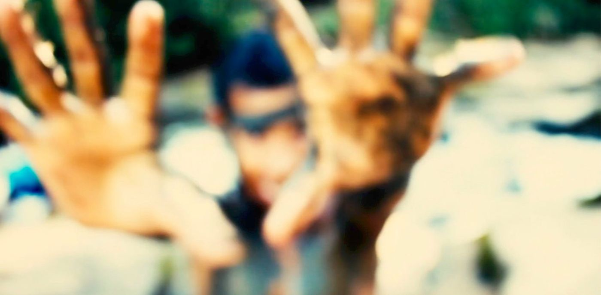

El sándwich de Mariana
Mariana sufre acoso en la escuela y, al seguir a su acosadora, descubre que ella también es víctima de violencia en casa.
México · 2014 · 11 minFicha 1 (PDF) ↓Los 30 artículos de la Declaración Universal de los Derechos Humanos como punto de partida. Cada artículo, una película o un vídeo, con su ficha de actividades para verla, conversarla y crear a partir de ella.

Cada ficha recoge el artículo, los datos de la película, datos y cifras sobre el tema y actividades para el grupo.
Mariana sufre acoso en la escuela y, al seguir a su acosadora, descubre que ella también es víctima de violencia en casa.
México · 2014 · 11 minFicha 1 (PDF) ↓Vídeo de campaña sobre los muros que levantamos entre las personas.
Amnistía Internacional · 2 minFicha 2 (PDF) ↓En medio de una guerra, un niño y un perro intentan protegerse. Stop motion de Walter Tournier.
Uruguay · 2016 · 7 minFicha 3 (PDF) ↓Hecho por adolescentes de Puerto Maldonado en un taller sobre trata y explotación sexual.
Perú · 2015 · 7 minFicha 4 (PDF) ↓Documental animado sobre un periodista reprimido y censurado en Chihuahua.
México · 2015 · 10 minFicha 5 (PDF) ↓Wilkin, de 12 años, nos muestra con su cámara su barrio en Santo Domingo.
Rep. Dominicana · 2011 · 11 minFicha 6 (PDF) ↓Los peligros que amenazan a los pueblos tagaeri y taromenane en la selva ecuatoriana.
Ecuador · 2013 · 6 minFicha 7 (PDF) ↓La lucha de las obreras inglesas por el voto de las mujeres.
Reino Unido · 2015Ficha 8 (PDF) ↓Jóvenes presos en una cárcel bajo tierra, víctimas de tortura.
Venezuela y México · 2015 · 27 minFicha 9 (PDF) ↓Un vídeo breve sobre el derecho a ser juzgado de forma imparcial.
Reino Unido · 2016 · 1 minFicha 10 (PDF) ↓Un jurado lucha por evitar un error judicial.
EE. UU. · 1957 · 2 minFicha 11 (PDF) ↓Una entrevista de trabajo que no es tan rutinaria como parece.
España · 2012 · 3 minFicha 12 (PDF) ↓Said, un niño marroquí, cruza el Estrecho y descubre que el mundo no es como se lo contaron.
España · 2006 · 12 minFicha 13 (PDF) ↓Un padre sirio toma una decisión arriesgada a orillas del Mediterráneo.
Francia · 2016 · 13 minFicha 14 (PDF) ↓Fotomontaje sobre el impacto de la apatridia en la infancia.
Fotografías de Greg ConstantineFicha 15 (PDF) ↓Las consecuencias del matrimonio infantil en niñas y niños de Nepal.
Human Rights Watch · 2016 · 7 minFicha 16 (PDF) ↓Eva lucha para que no destruyan su árbol en un futuro sin naturaleza.
China · 2017 · 4 minFicha 17 (PDF) ↓Cinco niños, cinco religiones, casi cinco minutos.
EE. UU. · 2015 · 4 minFicha 18 (PDF) ↓Janna Jihad, una niña palestina que se hizo periodista a los siete años.
Zoomin TV · 2018 · 4 minFicha 19 (PDF) ↓Cortometraje de Julien Dykmans.
Bélgica · 2015 · 6 minFicha 20 (PDF) ↓El célebre discurso de Cantinflas que critica a los gobernantes del mundo.
México · 1966 · 17 minFicha 21 (PDF) ↓Un episodio de Invisibles, de Isabel Coixet, sobre la enfermedad de Chagas.
España · 2007 · 12 minFicha 22 (PDF) ↓Un cerdito agricultor busca trabajo en una fábrica de la gran ciudad.
China · 2016 · 6 minFicha 23 (PDF) ↓Charlot frente al ritmo frenético de la cadena de montaje.
EE. UU. · 1936 · 3 minFicha 24 (PDF) ↓Documental satírico de Jorge Furtado sobre la miseria y la desigualdad.
Brasil · 1989 · 11 minFicha 25 (PDF) ↓Animación hecha con niñas y niños de Auquimarca (Junín) que alternan escuela y trabajo.
Perú · 2013 · 13 minFicha 26 (PDF) ↓Una orquesta de jóvenes que tocan instrumentos hechos con basura.
Paraguay · 2015 · 12 minFicha 27 (PDF) ↓Tras el asesinato de Berta Cáceres, defensora del río Gualcarque.
Honduras · 2016 · 30 minFicha 28 (PDF) ↓Una animación divertida sobre cómo hacer sitio a los demás.
2012 · 4 minFicha 29 (PDF) ↓Un chico tiene que defender su derecho a jugar al baloncesto frente a una pandilla.
VídeoFicha 30 (PDF) ↓